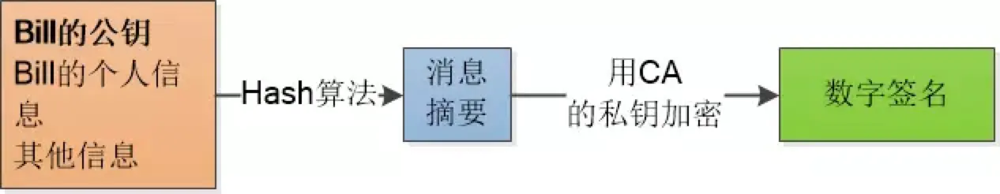
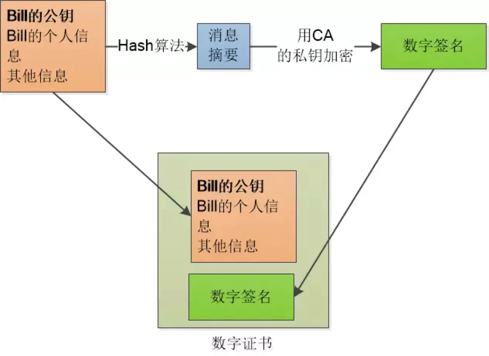

浅谈HTTPS
1 OSI 模型
开放式系统互联通信参考模型（英语：Open System Interconnection Reference Model，缩写为 OSI），简称为 OSI 模型（OSI model），一种概念模型，用来表述任意两台计算机数据交互的过程。
1.1 为什么需要会有 OSi 模型呢
在网络建立的初始阶段，是由各个厂商自己建立两台主机的数据交换方式，从而导致异构（不同网络结构的）的主机不能互联。为了解决这个问题，由国际标准化组织提出创建了 OSI 模型。
1.2 为什么要使用分层网络模型
- 降低复杂性
- 标准化接口
- 简化模块化设计
- 确保技术的互操作性
- 加快发展速度
- 简化教学
1.3 OSI 七层模型
OSI 将计算机网络体系结构( architecture ）划分为以下七层：
- 应用层
提供为应用软件而设的接口，以设置与另一应用软件之间的通信。例如: HTTP，HTTPS，FTP，TELNET，SSH，SMTP，POP3 等。 - 表达层
把数据转换为能与接收者的系统格式兼容并适合传输的格式- 确保接收系统可以读出数据
- 格式化数据
- 构建数据
- 协商用于应用层的数据传输语法
- 提供加密
- 会话层
建立、管理和终止在应用程序之间的会话（不同应用之间不能接收消息） - 传输层
- 建立端到端（主机到主机）的连接
- 把传输表头（TH）加至数据以形成数据包。传输表头包含了所使用的协议等发送信息。例如:传输控制协议（TCP）等。
- 确保数据传输的可靠性
- 建立、维护和终止虚拟电路
- 通过错误检测和回复
- 信息流控制来保障可靠性
- 网络层
决定数据的路径选择和转寄，将网络表头（NH）加至数据包，以形成分组。网络表头包含了网络数据。例如:互联网协议（IP）等。- 路由数据包
- 选择传递数据的最佳路径
- 支持网逻辑寻址（IP）和路径选择
- 数据链路层
负责网络寻址、错误侦测和改错。当表头和表尾被加至数据包时，会形成帧。数据链表头（DLH）是包含了物理地址和错误侦测及改错的方法。数据链表尾（DLT）是一串指示数据包末端的字符串。例如以太网、无线局域网（Wi-Fi）和通用分组无线服务（GPRS）等。
分为两个子层：逻辑链路控制（logic link control，LLC）子层和介质访问控制（media access control，MAC）子层。- 定义如何格式化数据以便进行传输以及如何控制对网络的访问。
- 物理层
物理层（Physical Layer）在局部局域网上传送数据帧（data frame），它负责管理计算机通信设备和网络媒体之间的互通。为启动、维护以及关闭物理链路定义了电器规范、机械规范、过程规范和功能规范，包括了网线、针脚、电压、线缆规范、集线器、中继器、网卡、主机适配器等，不符合规范的将不能互联。
我们做的是软件相关的，所以只关注应用层、表示层、会话层就行，下面传输层、网络层、数据链路层是由专业的网络架构人员维护的，物理层一般是都已经定义好了的。
1.4 形象示例
下面我以 QQ 甲向 QQ 乙发送一个笑脸表情为例来分析各层的处理：
- 应用层：输入一个笑脸
- 表达层：把笑脸命令通过加密等操作转换为机器能识别的语言（比如说二进制数据 101010）
- 会话层：维持 QQ 甲与 QQ 乙的会话连接
- 传输层：建立 QQ 甲与 QQ 乙的连接，QQ 使用的是UDP 协议,并把相关表头加到表达层的数据中
- 网络层：路由寻址，找到乙所在的位置（IP），并把这些信息加到传输层中
- 数据链路层：数据链路层是找到能唯一标识设备的MAC(用于在网络中唯一标示一个网卡)信息,并把数据加到网络层数据中
- 物理层：把所有数据转为二进制来传输
1.5 TCP/IP 协议栈
TCP/IP（Transmission Control Protocol/Internet Protocol，传输控制协议/网际协议）是指能够在多个不同网络间实现信息传输的协议簇，也是 OSI 模型的一个实例。
2 HTTP 的四次挥手
2.1 过程描述
几个报文的标识的解释:
SYN: synchronization (同步)
ACK: acknowledgement (确认:告知已收到)
FIN: finish (结束)
首先，当前客户端和服务器的状态都为连接状态（ESTABLISHED），接下来我们详细讲解下上图的过程：
- 客户主机发起连接释放的请求，设置 FIN 为 1，当然，序号 seq 也会带上，这里假设为 u ；发送完毕后，客户端进入 FIN-WAIT-1 状态
- 服务端接收到 FIN 报文后，会返回一个 ACK 报文回去，此时设置 ACK 为 1 ，确认号为 u + 1 ；表明自己接受到了客户端关闭连接的请求，但还没有准备好关闭连接。发送完毕后，服务器端进入 CLOSE-WAIT 状态，客户端接收到这个确认包之后，进入 FIN-WAIT-2 状态，等待服务器端关闭连接。
- 服务器端准备好关闭连接时，向客户端发送结束连接请求，FIN 置为 1 ；发送完毕后，服务器端进入 LAST-ACK 状态，等待来自客户端的最后一个 ACK 。
- 客户端接收到服务端传来的 FIN 报文后，知道服务器已经准备好关闭了，发送一个确认包，并进入 TIME-WAIT 状态，等待可能出现的要求重传的 ACK 报文；服务器端接收到这个确认包之后，关闭连接，进入 CLOSED 状态。
客户端等待了某个固定时间（两个最大段生命周期，2MSL，2 Maximum Segment Lifetime）之后，没有收到服务器端的 ACK ，认为服务器端已经正常关闭连接，于是自己也关闭连接，进入 CLOSED 状态。
2.2 形象示例
儿子（客户端）和妈（服务端）的最后对话：
儿子向妈：妈，我挂电话啦？
妈向儿子：行。
妈向儿子：挂吧。
儿子向妈：挂啦，妈，拜拜！
儿子稍微等一下，确定妈没有其他事了，就挂断了电话。
2.3 为什么挥手是四次不是三次（为什么握手是三次挥手是四次）
因为只有在客户端和服务端都没有数据发送的时候才能断开连接，客户端发出 FIN 报文时只能保证客户端没有数据发了，服务端还有没有数据发给客户端是不知道的。所以服务端收到客户端的 FIN 报文后只能先回复客户端一个确认报文来告诉客户端服务端已经收到你的 FIN 报文了，但服务端还有一些数据没发完，等这些数据发完了服务端才能给客户端发 FIN 报文(所以不能一次性将确认报文和 FIN 报文发给客户端)。
2.4 为什么客户端发出第四次挥手的确认报文后不会立刻释放 TCP 连接
这里同样是要考虑丢包的问题，如果第四次挥手的报文丢失，服务端没收到确认 ACK 报文就会重发第三次挥手的报文，这样报文一去一回最长时间就是 2MSL ，所以客户端需要等这么长时间来确认服务端确实已经收到了。
2.5 已经建立了连接如果客户端突然出现故障了怎么办
TCP 有一个计时器机制，服务端每次接收到客户端的请求都会复位这个计时器，当一定时间没有收到客户端的信息服务端就会发送一个探测报文，如果依然没有响应之后每隔 75s 重新发送一次，如果连着 10 个探测报文没有响应服务器就认为客户端出现了故障，会主动关闭连接。
3 HTTPS 与 HTTP 的区别
我们现在都只知道 https 已经是大势所趋，但对 https 和 http 之间的区别还不是特别清楚，下面是我总结的他们的对比：
| http | vs | https |
|---|---|---|
| 明文传输，网站或相关服务与用户之间的数据交互无加密，极易被监听，破解甚至篡改 | 传输方式 | 在 HTTP 下加入了 SSL 层，是数据传输变成加密模式，从而保护了交换数据隐私和完整性，简单来说它就是安全版的 HTTP |
| 无任何身份认证，用户无法通过 http 辨认出网站的真实身份 | 身份认证 | 经过证书颁发机构（CA, Certificate Authority）多重认证，包括域名管理权限认证，单位身份合法性确认等。EV 证书甚至可以直接在浏览器地址栏显示单位名称，提升用户体验 |
| 无任何使用成本，所有网站默认即 http 模式 | 实现成本 | 需要申请 SSL 证书来实现 https，价格几百元到上万元不等 |
| 80 端口 | 端口 | 443 端口 |
| 1.提示网站不安全 2.当您的网站上有类似注册登陆等表单时，用户一旦进行输入，浏览器便红色高亮显示“不安全” | 浏览器兼容性 | 1.提示网站连接是安全的 2.当您申请的是“EVSSL 证书”时，浏览器地址栏会直接显示您的单位名称，可显著提升网站用户的信任度和单位形象 |
| 对 http 网站无任何优待 | SEO 优化 | 百度谷歌等官方声明提高 https 网站的排名权重 |
| 极易被黑客或者恶意的同行进行流量劫持 | 网站劫持 | 隐私信息加密，防止流量劫持 |
| 访问速度根据网站服务器配置和客户端的浏览环境而定 | 访问速度 | 在同样配置的服务器以及客户端浏览环境下，可明显提高网页加载速度 |
| 当网站需要与第三方平台进行对接时，通常不接受 http 这种连接。例如微信小程序，苹果 ATS，抖音上做广告等等 | 数据对接 | 微信小程序，抖音，苹果等等越来越多的平台只接受 https 这种加密的安全链接 |
| 经常因为没有 https,而被各个浏览器或者其他平台显示风险警告，导致损害用户的信任度 | 网站形象 | 为网站的用户营造安全的浏览环境，是网站的基本责任，也是赢得用户信赖的一个重要因素 |
| 无任何风险保障，当网站数据传输被截取导致重大损失时，只有网站运营者自己承担 | 风险保障 | 拥有 10 万-175 万美元的商业保险，当网站数据传输被破解时，有巨额的保障额度 |
4 HTTPS 特性
为了解决这些不足，HTTPS 多了以下特性：
- TLS/SSL 内容加密
- 数字证书(CA)验明身份: 防范中间人攻击
- MD5、SHA-1 等散列值方法防止信息篡改
HTTPS 相对于 HTTP 性能上差点，因为多了 SSL/TLS 的几次握手和加密解密的运算处理，但是加密解密的运算处理已经可以通过特有的硬件来加速处理。
4.1 SSL/TLS
SSL(Secure Sockets Layer 安全套接层),及其继任者传输层安全（Transport Layer Security，TLS）是为网络通信提供安全及数据完整性的一种安全协议。TLS 与 SSL 在传输层对网络连接进行加密。
为了保护敏感数据在传送过程中的安全，全球许多知名企业采用 SSL 加密机制，也随着数据安全的重要性和趋势，越来越多的网站都开始接入 HTTPS。
SSL 协议提供的安全通道有以下三个特性：
- 机密性：SSL 协议使用密钥加密通信数据。
- 可靠性：服务器和客户都会被认证，客户的认证是可选的。
- 完整性：SSL 协议会对传送的数据进行完整性检查。
简单地讲，SSL/TLS 就是同时结合各种密码算法、数字签名算法及数字证书等技术的一套协议，目的就是为了保证通信的安全性。 采用 SSL/TLS 协议，通信双方建立连接之前需要进行握手，目的是协商出会话密钥，用于后续对通信数据的加解密操作
4.2 HTTPS 加密方式
加密的目的是保证传输的内容只有对话双方能看懂
下面以中国的张大胖于米国的 Bill 进行通信为例
方式一、使用对称密钥

两人商量了一下，可以使用对称密钥进行加密。（对称密钥也就是加密和解密使用的是同一个密钥）
但是问题又来了，既然网络是不安全的，那么最开始的时候怎么将这个对称密钥发送出去呢？如果对称密钥在发送的时候就已经被拦截，那么发送的信息还是会被篡改和窥视啊~~
所以这种对称密钥的弊端就是，可能被中间人拦截，这样中间人就可以获取到了密钥，就可以对传输的信息进行窥视和篡改。
方式二、使用非对称密钥

RSA（非对称加密算法）：双方必须协商一对密钥，一个私钥一个公钥。用私钥加密的数据，只有对应的公钥才能解密，用公钥加密的数据， 只有对应的私钥才能解密。

这样的话 Bill 将自己的公钥给张大胖，张大胖发送的信息使用 Bill 的公钥加密，这样，只有 Bill 使用自己的私钥才能获取
但是这样有个弊端：
- RSA 算法很慢= =，要慢很多
所以为了解决这个问题，我们使用非对称密钥+对称密钥结合的方式
方式三、非对称密钥+对称密钥
使用对称密钥的好处是速度比较快，使用非对称密钥的好处是可以使得传输的内容不能被破解，因为就算你拦截到了数据，但是没有 Bill 的私钥，也是不能破解内容的。就比如说你抢了一个保险柜，但是没有保险柜的钥匙也不能打开保险柜。
所以我们要结合两者的优点。使用 RSA 的方法将加密算法的对称密钥发送过去，之后就可以使用这个密钥，利用对称密钥来通信了。就比如说我将钥匙放进了保险柜，然后将保险柜寄给对方。
中间人攻击
还有一个问题就是在使用非对称密钥的时候，首先需要将 Bill 的公钥给张大胖，那么在这个过程中，安全是没有保障的，中间人可以拦截到 Bill 的公钥，就可以对拦截到的公钥进行篡改。
这也就是相当于我有手机号，虽然是公开的，谁都可以给我打电话，但是刚开始你并不知道我的手机号，我需要将我的手机号发给你，在我发给你我的手机号的时候，被中间人拦截了，然后将我正确的手机号换成了错误的手机号，比如：110，然后，你收到的就是错误的手机号：110，但是你自己还不知道你收到的是错的手机号，这时候，你要是给我打电话，就尴尬了~~
确认身份 —— 数字证书
所以以上的步骤都是可行的，只需要最后一点就可以了，要确定 Bill 给张大胖的公钥确实是 Bill 的公钥，而不是别人的。（刚刚电话号码的那个例子，也就是说，需要确定我给你发的电话号码是我的，没有被修改的）
那怎么确认 Bill 给张大胖的公钥确实是 Bill 的呢？
这个时候就需要公证处的存在了。也就是说我需要先将我的电话号码到公证处去公证一下，然后我将电话号码传给你之后，你在将你收到的电话号码和公证处的比对下，就知道是不是我的了。
对应到计算机世界，那就是数字签名

数字签名也就是相当于公证处在公证书上盖章。

数字签名和原始信息合在一起称为数字证书，Bill 只需将数字证书发送给张大胖就可以了。
在拿到数字证书之后，就用同样的 Hash 算法， 再次生成消息摘要，然后用 CA 的公钥对数字签名解密， 得到 CA 创建的消息摘要， 两者一比，就知道有没有人篡改了！

4.3 SSL 协议的握手过程
4.3.1 形象示例
在正式分析之前，先引入阮一峰老师的图解 SSL/TLS 协议帮大家快速理解下基础概念，这边 john 将对话内容翻译成中文:
握手阶段分成五步：
- 第一步，爱丽丝给出协议版本号、一个客户端生成的随机数（Client random），
以及客户端支持的加密方法。 - 第二步，鲍勃确认双方使用的加密方法，并给出数字证书、以及一个服务器生成的随机数
（Server random）。 - 第三步，爱丽丝确认数字证书有效，然后生成一个新的随机数（Premaster secret），
并使用数字证书中的公钥，加密这个随机数，发给鲍勃。 - 第四步，鲍勃使用自己的私钥，获取爱丽丝发来的随机数（即 Premaster secret）。
- 第五步，爱丽丝和鲍勃根据约定的加密方法，使用前面的三个随机数，生成”对话密钥”
（session key），用来加密接下来的整个对话过程。
4.3.2 综合分析
- 客户端先生成一个随机数，然后传输到服务端，并且会带上客户端这边支持的所有加密套件
- 服务端拿到这个随机数之后先存起来，服务端也生成一个随机数，这个随机数会伴随着服务端的证书，也就是我们之前说到的公钥，一起传输给客户端
- 客户端拿到了服务端的随机数之后也先存着，通过服务端传给他的公钥生成一个预主秘钥，生成过程当中会产生一个新的随机数，所以总共是有三个随机数，客户端生成的这个随机数用公钥加密后传输给服务器这边，这个过程就是没有办法被中间人解析的一个过程，因为它使用的是公钥进行加密，只有服务端这边的私钥可以对其解密
- 这个数据传输到服务器之后，服务器通过私钥解密，拿到了预主秘钥也就是我们说的那个随机字符串
- 最终服务端会选择一个客户端这边支持的加密套件，然后两边确定同时使用这同一个加密套件，对这三个随机数进行一个算法的操作，生成一个主秘钥，因为最后一个随机数只有客户端和服务端知道，中间人根本拿不到，所以他们生成的这个主秘钥也是中间人根本没有办法破解的，后期传输的数据就全部是通过这个主秘钥进行加密的，因为两边主秘钥是一样的，所以两边都能够对数据加密之后进行解密，中间人因为没有办法知道这个主秘钥，所以他没有办法对数据进行解密，所以这中间的数据传输就变成了安全的传输
6 域名申请
域名申请以 西部数码 平台为例，其他平台操作基本相同。
- 注册后，在首页搜索你想要申请的域名，他会查出该域名及相关域名的注册情况和对应的首年的花费。
- 根据需求和要求填写相关资料
- 购买
- 实名认证
- 域名解析
域名解析是为了把域名和自己的服务器在整个网络中声明和绑定。
点击操作 -> 解析，这里以有服务器（腾讯云）为例。
根据下面的温馨提示，在对应值除输入服务器的公网 IP，输入后点击保存（如果需要实名认证，请自行输入完成）。这时域名还不能直接使用，需要等待域名实名通过才行。
等域名实名通过后和这里服务器 IP 填写没有问题时，点击上方的解析诊断，应该会弹出下面的提示。
下面提供自己电脑解析使用的方式：
- 打开文件：C:\Windows\System32\drivers\etc\host
- 在文件最后新增：
1 | 81.70.27.70 suyp.top |
注：
域名解析时先会找浏览器缓存和本地的 HOST 文件，找不到才会向网络中的分布式域名存储节点查询
域名解析就是把你的域名和 IP 对应关系放到分布式域名存储节点中
- 到此，在域名到期前，域名和我们的服务器就绑定在一起了
7 证书申请
7.1 申请平台
下面列举了一些常见的证书申请平台：
- let’s encrypt
let’s encrypt 可以申请免费的 TLS 证书，每 3 个月需要手动续 - 腾讯云
- 阿里云
- 西部数码
- FreeSSL
7.2 证书的类型
- 域名验证型( DV ) SSL 证书
- 组织验证型( OV ) SSL 证书
- 扩展验证型( EV ) SSL 证书
DV 适用于个人，OV 和 EV 需要身份审核，EV 最高端。
EV 证书会在浏览器的地址栏显示证书的企业名称：
7.3 证书申请流程
下面以 FreeSSL 证书申请平台为例。
打开 FreeSSL 网站，在输入框中输入自己的域名
品牌选择：亚洲诚信 （品牌差异后面介绍），点击 创建免费的 SSL 证书
- 输入自己的邮箱地址，一会用于验证，其他参数（后面介绍）如下图
- 下载 KeyManager 软件，注册，进入主页面，他会自动生成 CSR ，浏览器中点击继续
- 两种验证方式
DNS 验证：系统会为用户生成一条 CNAME 记录，用户只需在自己的域名服务商处增加此条 CNAME 的解析记录，即可完成域名验证。
验证信息：
如果没有服务器，可以在 DNS 解析平台通过 DNS 验证，步骤如下：

在服务器提供商处通过 DNS 验证：
文件验证：系统会为用户生成一个随机字符串，用户需将此页面放在域名指向服务器中的指定位置，并确认可通过公网访问。
验证信息：
  注：
以点开头为名称的文件夹创建方式：- cmd： 使用命令创建文件夹
md .well-know - 在你命名文件夹的名称前后都加上点
- cmd： 使用命令创建文件夹
- 返回 FreeSSL 平台界面，点击 配置完成，检测一下
域名解析指向添加成功和修改成功，需等待各地 DNS 刷新后解析方可生效。
- 验证成功后，返回 FreeSSL 页面，点击验证
- 点击保存到 KeyManager 软件中
- 导出 crt、key、pem 文件
- 导出 crt、key 文件
在 KeyManager 中选择生成的证书 -> 更多 -> 导出证书 - 导出 pem 文件
在 FreeSSL 网站中选择 控制台 -> 证书列表 -> 要导出的证书 -> 更多操作 -> 证书下载 - 把三个文件的名称统一的
到此，域名 suyp.top 的证书就申请成功了。
7.4 证书文件
以下为不同后缀的 ssl 证书文件的作用:
.key 文件：属于密钥文件，SSL 证书的私人密钥就包括在内。是信息内容的中枢；
.csr 文件：文件里包括证书的公用密钥和一些公司内部重要秘密信息，要使用者通过请求签名之后才能够直接生出证书；
.crt 文件：此文件也包含了 ssl 证书的公用密钥、签字讯息以及根据不同的类型伴随不同认证的信息，通常各类签名签字证书都会在这类文件中，如 IP 等；
.pem 文件：该文件较其他后缀文件来说比较少见，里面包含着证书的私人密钥以及其他一部分证书重要的信息。
7.5 证书品牌差异
- Symantec
Symantec （SSL 业务已被 DigiCert 收购） 是全球最大的信息安全厂商和服务商，最权威的数字证书颁发机构，为企业、个人用户和服务供应商提供广泛的内容和网络安全解决方案，全球 500 强中有 93% 选择了 VeriSign SSL 数字证书，赛门铁克于 2010 年 8 月收购 VeriSign，目前 VeriSign 认证服务现均由赛门铁克提供，并在 2012 年 4 月对 VeriSign 的产品名称和品牌标识进行变更。
- GeoTrust
GeoTrust 是全球第二大数字证书颁发机构( CA )，也是身份认证和信任认证领域的领导者，该公司各种先进的技术使得任何大小的机构和公司都能安全地低成本地部署 SSL 数字证书和实现各种身份认证。从 2001 年成立到 2006 年占领全球市场 25% 的市场分额， 于 2006 年 5 月 / 2006 年 9 月 VeriSign 以 1.25 亿美元收购 GeoTrust，目前也同为赛门铁克旗下 SSL 证书的性价比品牌。
单纯从技术角度，symantec（原 verisign）和 GeoTrust 的区别如下：
算法支持上 Symantec（支持 RSA DSA ECC 三种算法）优于 Geotrust（支持 RSA DSA 两种算法）；
兼容性 Symantec 优于 Geotrust； Symantec 可兼容市面上所有的浏览器，对移动端的支持也是最好的
OCSP 响应速度上 Symantec 优于 Geotrust；
CA 安全性方面 Symantec 优于 Geotrust，Symantec 是国际知名安全厂商，CA 的安全级别也是国际第一的安全系数；
Symantec 证书除实现加密传输以外，还另外有恶意软件扫描和漏洞评估的附加功能；
Symantec 对证书有商业保险赔付保障，金额最高为 175 万美金，GeoTrust 最高为 150 万美金。
- TrustAsia
亚洲诚信是亚数信息科技（上海）有限公司应用于信息安全领域的品牌，是 Symantec™（赛门铁克）的白金合作伙伴，专业为企业提供包含数字证书在内的所有网络安全服务。同时，TrustAsia 品牌 SSL 证书由 Symantec 根证书签发
- 品牌的差异
不同品牌的证书在浏览器地址栏、加密强度、赔付保障上均存在差异，最重要的差异点在于根证书，例如 Geotrust 通配符是 Geotrust 根证书签发的，而 Symantec 通配符是 DigiCert 根证书签发的，Symantec 根证书可以兼容市面上所有的浏览器，对移动端的支持也是最好的。而 Trustasia 通配符也是赛门铁克的根证书，但是为域名型证书，在证书里面不体现公司信息，所以价格比较优惠。
因此用户可以根据不同 web 应用选择不同认证等级(DV、OV、EV)和域名支持能力的证书，个人网站只能选择域名型 DV 证书，OV、EV 类型证书要求是企业才能申请。
7.6 证书类型- RSA 和 ECC
ECC: （安全性高，效率高，密钥短）
RSA: （最普通，算法复杂，密钥长）
7.7 ECC SSL 证书兼容性
Web 服务器：Apache HTTP Server 2.2.26+，Apache Tomcat 1.1.30+，Dovecot 2.2.5+，IBM HTTP Server 8.0+，NGINX 1.1.0+，Windows Server 2008+
浏览器：Firefox 2+，Apple Safari 4+ (with a compatible OS)，Google Chrome 1.0+ (with a compatible OS)，Microsoft Internet Explorer 7+ (Vista)
如果你的环境低于这些版本，说明不支持使用 ECC 算法的 SSL 证书。
ECC 算法 和 RSA 算法
RSA 算法是 1976 年提出来的，为了保障数据的安全，RSA 的密钥需要不断增加，导致加解密的速度大为降低。
ECC 算法是 1985 年提出来的。和 RSA 相比，在许多方面都有对绝对的优势，抗攻击性强，CPU 占用少，内容使用少，网络消耗低，加密速度快。
7.8 如何选择
在申请域名 SSL 证书的时候，该如何选择加密算法
RSA：考虑到更广的适用性，兼容所有平台。
ECC：更加安全高效，部分平台不支持。
来此加密：申请免费证书时，选择合适的加密类型。
8 nginx 和 tomcat 配置
- nginx
- 把三个文件拷到 nginx/conf/ 下
- 修改文件 nginx.conf，主要是 HTTPS server 下面的配置， 示例如下：
1 |
|
效果：
- tomcat
版本：apache-tomcat-9.0.39
- ssl 文件准备
在 KeyManager 中选择域名 ssl ，导出证书（Tomcat（jks）），设置私钥加密密码，最终会导出一个 .jks 文件 - tomcat 配置
- 把 .jks 文件拷到 tomcat/conf 下
- 打开文件 tomcat/conf/server.xml
- 找到代码
1 | <!-- |
- 替换为
1 | <Connector port="443" protocol="org.apache.coyote.http11.Http11NioProtocol" |
效果：